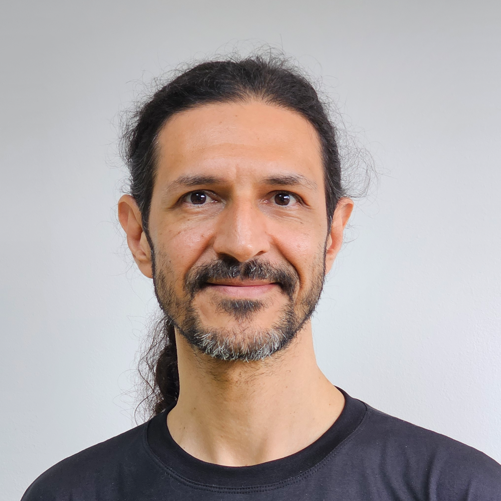

sidleal
Pesquisador e Cientista de Dados
sidleal@gmail.comPesquisador e cientista de dados no Venturus; pós-doc em Processamento de Fala (Tarsila/C4AI/USP); doutor em Ciências da Computação na área de Inteligência Artificial; MBA em Gestão da Tecnologia da Informação; bacharel em Ciência da Computação e técnico em Processamento de Dados. Atua na indústria desde 1995 em projetos de tecnologia de diversos portes para governos, bancos e multinacionais. Áreas de interesse: aprendizagem de máquina, processamento de linguagem natural, reconhecimento e síntese de fala, complexidade/simplificação de textos e internet das coisas.